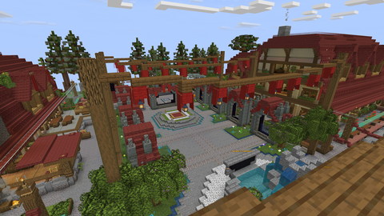
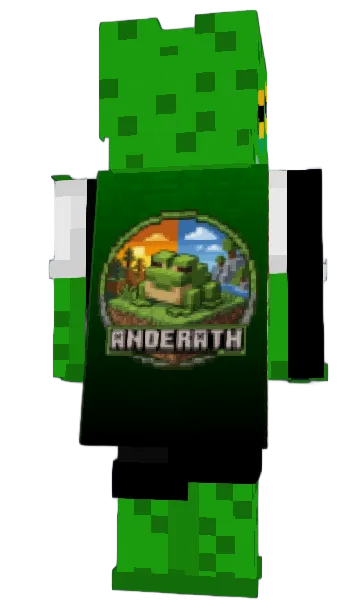
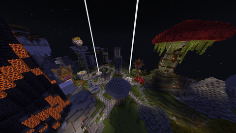

Gemeinsam live
Collabs entstehen natürlich durch Dörfer, Handel, Expeditionen und Events.
SEASON 04 // CREATOR SMP
Anderath 4.0 ist die vierte Season unseres Minecraft-Projekts – gebaut für Streamer, ihre Communities und Geschichten, die live entstehen.
Das Anderath-Video ist da – jetzt auf YouTube ansehen ↗VIERTE SEASON · NEUE GESCHICHTEN
FÜR CREATOR
Geh live, triff andere Creator und nimm deine Community mit in eine Welt, die jeden Stream neue Geschichten schreibt.
Collabs entstehen natürlich durch Dörfer, Handel, Expeditionen und Events.
Quests, Monster und monatliche Events liefern immer neue Stream-Anlässe.
Zuschauer erleben die Season mit und können Wildcards gewinnen.
SO GEHST DU LIVE
Setze bei jedem Anderath-Stream den Projektnamen an den Anfang. Danach gehört der Titel ganz dir.
Format: Anderath| …
DEINE WELT
Ein Zuhause mit Identität.
Freundschaften und Rivalitäten.
Aufgaben und Belohnungen.
Shops und Spielerhandel.
Echte Stream-Momente.
Monatliche Challenges.
DEIN WEG NACH ANDERATH
Du brauchst keine riesige Reichweite. Entscheidend sind Teamgeist, Verlässlichkeit und Lust auf guten Content.
Bewerbung öffnen →Erzähl uns von dir und deinem Kanal.
Finde erste Mitspieler auf Discord.
Schließ dich einem Team an.
Anderath| … in den Titel – und los.
CREATOR TRACK
Werde ein Gesicht von Anderath 4.0 und erschaffe Content mit anderen Creatorn.
COMMUNITY TRACK
Mit einer von zehn Wildcards kannst du auch ohne Stream Teil der Welt werden.
SERVERREGELN
Das Anderath-Kurzregelwerk gilt für alle Spieler und sorgt dafür, dass sich Creator und Community gleichermaßen wohlfühlen.

BLUEMAP · LIVE
Öffne die interaktive 3D-Karte und sieh dir den Spawn sowie die Welt von Anderath direkt in BlueMap an.
Die Live-Karte öffnet sich wegen der derzeitigen HTTP-Verbindung in einem neuen Tab.
Server-Spawn auf BlueMap öffnen ↗ANDERATH 4.0 MODPACK
Hol dir das komplette Anderath-Erlebnis – am einfachsten mit dem NoRisk Client.
FEATURED DOWNLOAD · NORISK CLIENT
Unser Modpack ist fertig für den NoRisk Client gepackt. Herunterladen, im Client importieren und ohne Umwege losspielen.

EXCLUSIVE ANDERATH ADD-ON
Das exklusive Anderath Cape macht deinen Look auf dem Server unverwechselbar – mit dem offiziellen Motiv auf dem Rücken.

AUS DEM ARCHIV3.0ALTES ANDERATH · SEASON 03
Bevor Anderath 4.0 seine Tore öffnet, werfen wir noch einmal einen Blick zurück: auf Bauwerke, Geschichten und gemeinsame Momente aus der alten Anderath-Welt.
FAQ
Die wichtigsten Antworten für deinen Start.
Nein. Teamgeist und Lust auf gemeinsames Storytelling sind wichtiger als große Zahlen.
Beginne jeden Projekt-Stream mit Anderath|. Dahinter steht dein eigener Titel.
Nein. Als Streamer sollst du das Projekt zwar regelmäßig live zeigen, musst aber nicht jede Spielsession streamen und darfst auch offline spielen. Durch die Streams aus verschiedenen Dörfern entstehen unterschiedliche Blickwinkel auf die Welt. Wenn du live bist, verwende bitte Anderath| … am Anfang deines Twitch-Titels.
Wildcard-Spieler kommen aus der jeweiligen Community. Der zugehörige Creator beziehungsweise die Community bürgt für den Wildcard-Spieler und steht für ein faires und respektvolles Verhalten ein.
Das sind die OG-Anderath-Spieler. Sie sind die einzige Ausnahme und dürfen unabhängig von einem Streamer- oder Wildcard-Platz in jeder Season mitspielen.
Kontakt, Hilfe und Support erhältst du ausschließlich auf unserem Discord-Server ↗.
Nein, natürliches Zusammenspiel steht im Mittelpunkt.
DEIN KAPITEL BEGINNT
Bewirb dich jetzt und werde Teil der vierten Season.